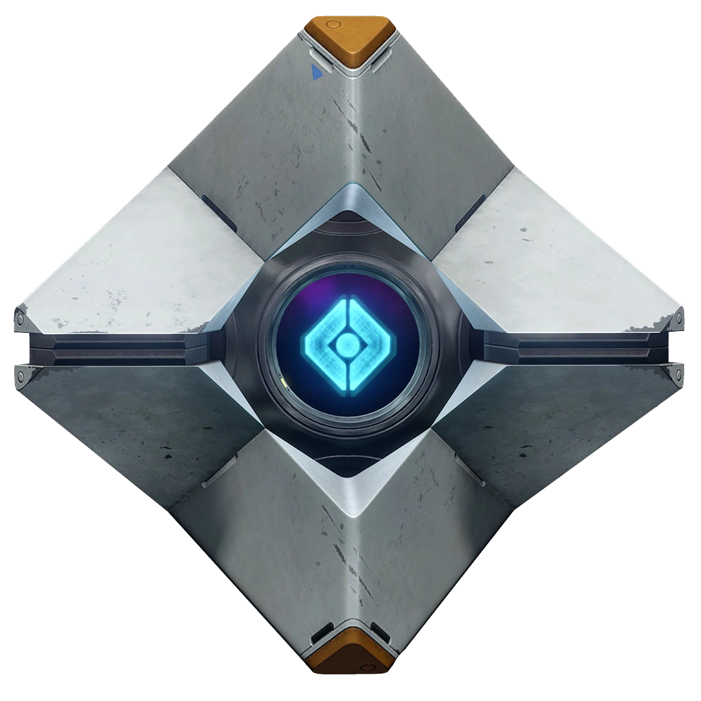

Choosing to ignore the strange interaction, you heed your ghost’s words and head through an open maintenance door, dashing up the stairs to a catwalk within the large steel wall structure. At the end of the catwalk you come to a forked path, one going right and one going left. The left path is dark, barely illuminated by what remains of the facility’s emergency lighting, your brain sending danger signals down your spine. The path on the right is brightly lit by way of a gaping hole in the ceiling, with relatively safe looking catwalks guiding the way forward.
As you pause to choose your next move, your ghost chimes in, “The signature was coming from the west. We need to head left.”
Which direction do you head?